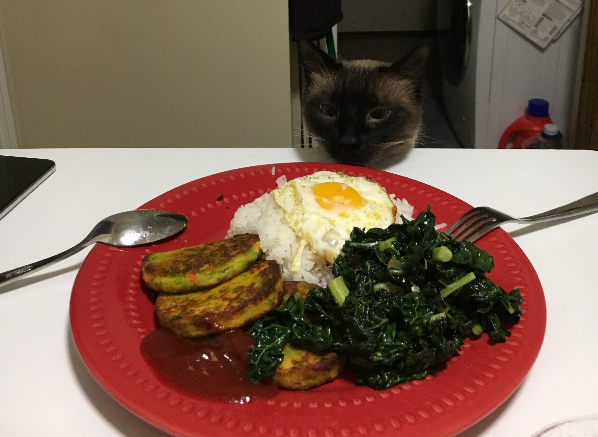

About Alpha
Alphachino, or by his nicknames "Alpha" or "Hamao", is a friendly and vocal Tonkinese cat. He likes to sleep a lot, make nests on fluffy duvets, and tries to get away with scratching a little bit of furniture. He has two pets that he bosses around.
Alpha on the dinner table
Alpha's Characteristics
- He has a Siamese cat-like complexion
- He is a friendly and vocal cat
- He sleeps a lot during the day
- He becomes a zoom demon at night
Information about Tonkinese cats
The Tonkinese is a mix of the Siamese and Burmese cat breeds and has a loving, affectionate personality. To learn more about sharing your home with a pretty, playful Tonkinese, click on the links below: